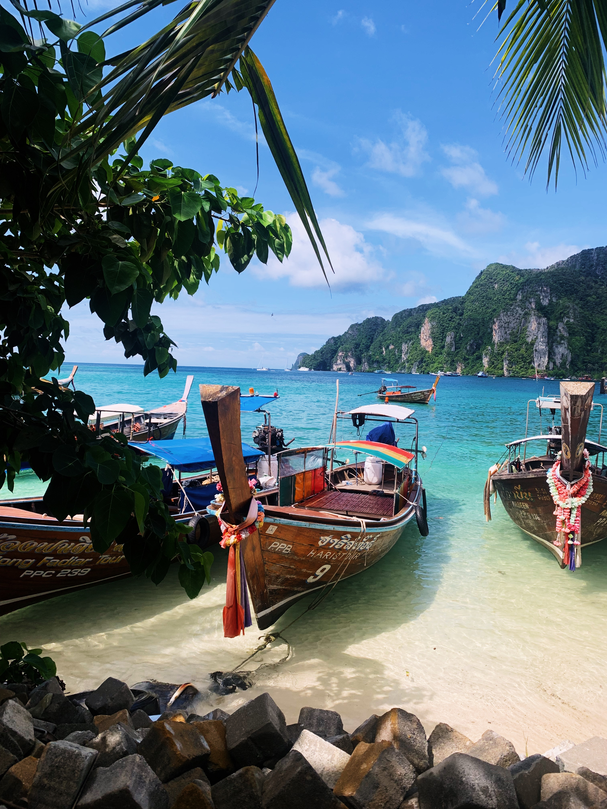
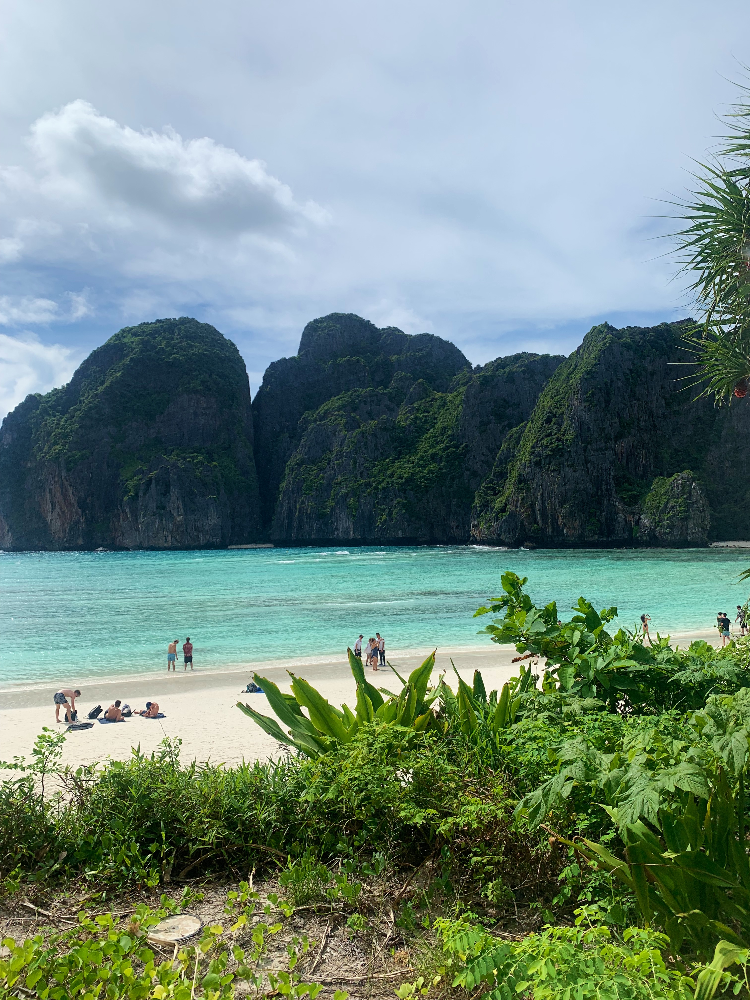
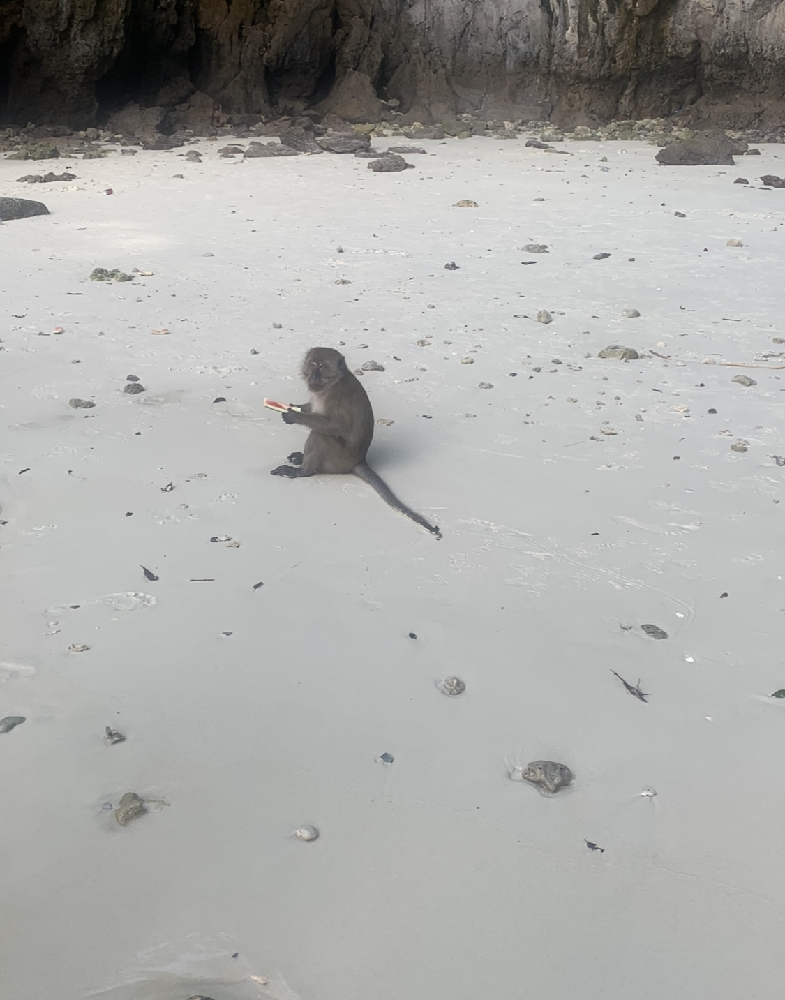

KohPhiPhi
Mijn tweede bestemming waar ik wat over ga vertellen is het eiland Koh Phi Phi.
Om alvast met de deur in huis te vallen de eilanden waar ik in Thailand ben geweest waren mijn meest favorieten plekken.



Wat ik het meest zou aanraden is toch wel de boot tour op Koh Phi Phi.
Er is 1 bekende tour en aan elk persoon waar je het aan vraagt zou je deze boot tour als tip krijgen.
Je gaat naar verschillende eilanden rondom Phi Phi. Monkey island, Snake Island en het eiland waar james bond is opgenomen.
Echt een aanrader. Verder heb je op Phi Phi veel schattige restaurants.
Omdat Phi Phi zo klein is is er ook geen vervoer en kan je alles op het eiland lopen. Er zijn geen auto's, alleen maar voetpaden.
Het enige wat er gebruikt zou worden zijn paard en wagen. Lekker ouderwets maar echt een hele leuke sfeer.